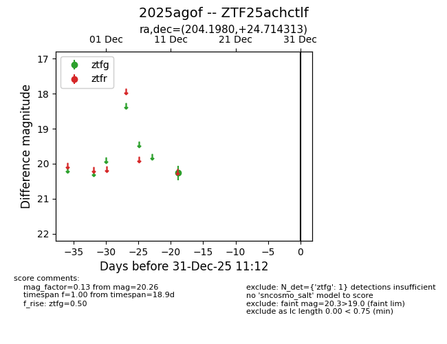
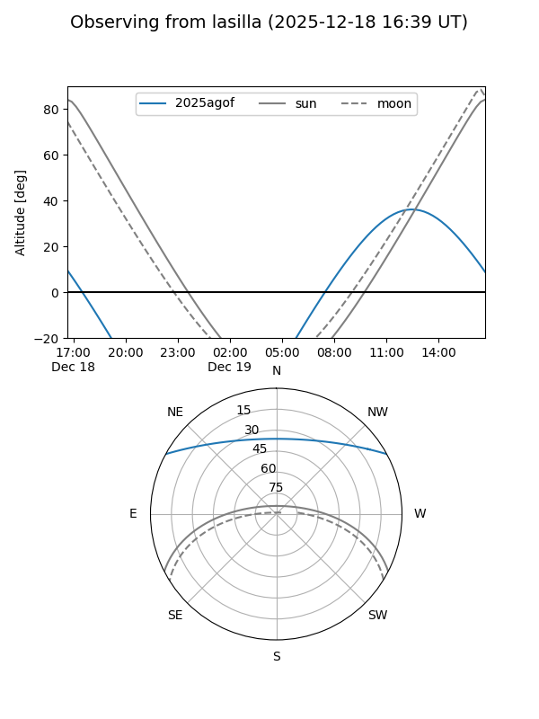
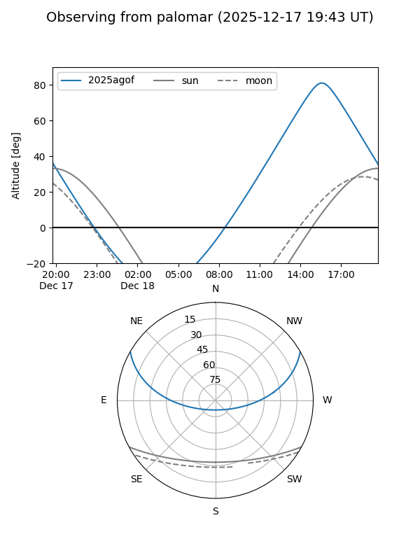

2025agof
Target 2025agof at 2025-12-18 11:18
Aliases and brokers:
FINK: fink-portal.org/ZTF25achctlf
Lasair: lasair-ztf.lsst.ac.uk/objects/ZTF25achctlf
ALeRCE: alerce.online/object/ZTF25achctlf
TNS: wis-tns.org/object/2025agof
YSE: ziggy.ucolick.org/yse/transient_detail/2025agof
alt names
ZTF25achctlf (ztf,fink_ztf)
2025agof (tns,yse)
Coordinates:
equatorial (ra, dec) = 204.1980,+24.71431
equatorial (HMS+DMS) = 13:36:47.51,+24:42:51.53
galactic (l, b) = (22.1427,+79.52477)
Photometry
last ztfg=20.26
1 ztfg detections
Lightcurve

Visibility


Additional plots